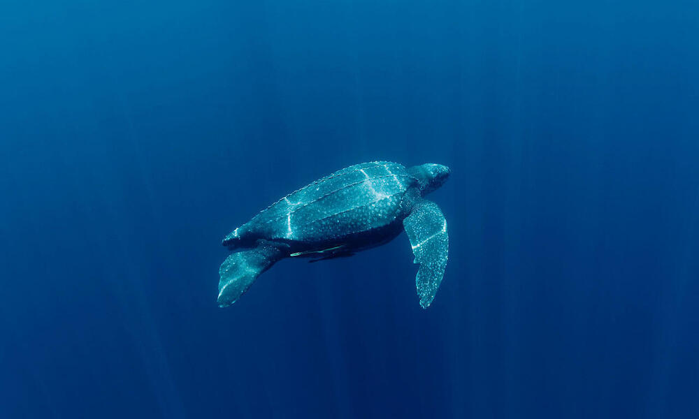

Leatherback Sea Turtle
Leatherback turtles get their name from its shell, which is leathery rather than hard like other turtle shells. They are the largest and most migratory sea turtle species, spanning both the Atlantic and Pacific Oceans. Every summer and fall, Pacific leatherback turtles migrate from breeding beaches in the Coral Triangle all the way to the California coast to dine on the abundant jellyfish. Despite their widespread distribution, the number of leatherback turtles has dropped dramatically over the last century as a result of intensive egg collecting and bycatch in fisheries. According to the IUCN, the global status of leatherback turtles is Vulnerable, but certain subpopulations (such as those in the Pacific and Southwest Atlantic) are Critically Endangered.

| Kingdom | Animalia |
|---|---|
| Phylum | Chordata |
| Class | Reptilia |
| Order | Testudines |
| Family | Cheloniidae |
| Genus | Dermochelys |
| Species | coriacea |
Appearence
The leatherback's skin is mostly black and rubbery, with pinkish-white markings on the underside. They are the only marine turtle species that lacks scales. Their shell (carapace) is made up of tiny, interlocking dermal bones beneath the skin that support a layer of connective tissue and fat as well as the deeper skeleton. Their carapace features seven ridges that run the length of it and taper to a tip. Their front flippers are longer than those of other sea turtles, and their back flippers are paddle-shaped. The leatherback is especially prepared for long distance foraging excursions due to its stiff carapace and large flippers.
Behaviour and Diet
Leatherback sea turtles travel the furthest between breeding and feeding grounds of any sea turtle, with some traveling 3,700 miles each way. They spend the majority of their life in the ocean, but females leave to lay eggs. Leatherback turtles are excellent swimmers who can dive to depths of 4,000 feet—the deepest of any turtle-and stay there for up to 85 minutes.
Leatherback sea turtles lack the crushing, chewing plates found in other sea turtles that feed on hard-bodied food. Instead, they have sharp-edged jaws with pointed tooth-like cusps that are perfectly adapted for a diet of soft-bodied open ocean prey like jellyfish and salps. Backward-pointing spines in a leatherback's mouth and throat aid in the retention of gelatinous prey.

Leatherback sea turtles travel the furthest between breeding and feeding grounds of any sea turtle, with some traveling 3,700 miles each way. They spend the majority of their life in the ocean, but females leave to lay eggs. Leatherback turtles are excellent swimmers who can dive to depths of 4,000 feet—the deepest of any turtle-and stay there for up to 85 minutes.
Leatherback sea turtles lack the crushing, chewing plates found in other sea turtles that feed on hard-bodied food. Instead, they have sharp-edged jaws with pointed tooth-like cusps that are perfectly adapted for a diet of soft-bodied open ocean prey like jellyfish and salps. Backward-pointing spines in a leatherback's mouth and throat aid in the retention of gelatinous prey.
Lifespan and Reproduction
Leatherback turtles mature more quickly than hard-shelled turtles. The age at which they reach sexual maturity, however, is unknown. The average age ranges from 9 to 20 years old. Similarly, nothing is known about their life expectancy, but they are expected to be long-lived, with estimates ranging from 45 to 50 years or more.
Female leatherback turtles lay their eggs at night on tropical and subtropical beaches. They excavate a big body pit into which they lay their eggs in deep egg chambers/nests. A leatherback nest will disturb a large area of the sand and leave long, circling traces. The nesting season in the United States and the Caribbean lasts from March through July. Satellite tagging studies of leatherback turtles from the Western Pacific show that turtles that hatch at different times of the year migrate in distinct ways. Summer nesting turtles (July through September) forage in tropical and temperate northern hemispheres, while winter nesters (November through February) forage in tropical and temperate southern hemispheres. Female leatherback turtles return to their nests every 2 to 4 years. Leatherback turtles nest numerous times during the nesting season, usually at 8- to 12-day intervals, and lay clutches of 100 eggs. Before leatherback hatchlings emerge from the nest, the eggs incubate for around two months.